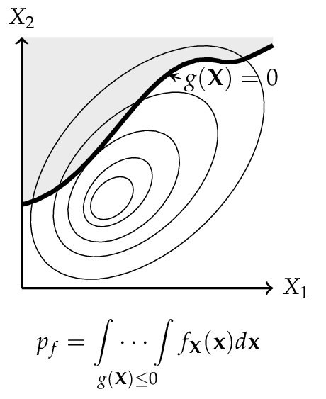

Simulation methods#
Simulation estimates the event probability directly from sampled evaluations, including when a local design-point approximation is inadequate. The starting point is the probability integral in Equation (2). Direct Monte Carlo is the basic estimator; importance sampling, line sampling and subset simulation seek to reduce the cost of rare-event estimation. [Nowak2000] [Faber2009]
See Estimating failure probability by simulation for the practical workflow and FORM, SORM and design-point diagnostics for the local approximations being compared.
The principle of simulation methods is to carry out random sampling in the physical (or standardized) space. For each of the samples the limit state function is evaluated to figure out, whether the configuration is desired or undesired. The probability of failure \(p_f\) is estimated by the number of undesired configurations, respected to the total numbers of samples. [Lemaire2010]
For this analysis Equation (2) can be rewritten as
where \(I\) is an indicator function that is equals to 1 if \(g(\mathbf{X}) \leq 0\) and otherwise 0. Equation (1) can be interpreted as expected value of the indicator function. Therefore, the probability of failure can be estimated such as [Malioka2009]
Crude Monte Carlo simulation#
The Crude Monte Carlo simulation (CMC) is the most simple form and corresponds to a direct application of Equation (2). A large number \(n\) of samples are simulated for the set of random variables \(\mathbf{X}\). All samples that lead to a failure are counted \(n_f\) and after all simulations the probability of failure \(p_f\) may be estimated by [Faber2009]
Theoretically, an infinite number of simulations will provide an exact probability of failure. However, time and the power of computers are limited; therefore, a suitable amount of simulations \(n\) are required to achieve an acceptable level of accuracy. One possibility to reach such a level is to limit the coefficient of variation CoV for the probability of failure. [Lemaire2010]
Importance sampling#
To decrease the number of simulations and the coefficient of variation, other methods can be performed. One commonly applied method is the Importance Sampling simulation method (IS). Here the prior information about the failure surface is added to Equation (1)
where \(h_{X} (\mathbf{X})\) is the importance sampling probability density function of \(\mathbf{X}\). Consequently Equation (2) is extended to [Faber2009]
The key to this approach is to choose \(h_{X} (\mathbf{X})\) so that samples are obtained more frequently from the failure domain. For this reason, often a FORM (or SORM) analysis is performed to find a prior design point. [Baker2010]
{kind=link}

Representation of a physical space with a set \(\mathbf{X}\) of any two random variables. The shaded area denotes the failure domain and g(mathbf{X}) = 0 the failure surface.

For the CMC method every dot corresponds to one configuration of the random variables \(\mathbf{X}\). Dots in shaded areas lead to a failure.

The IS simulation method uses a distribution centered on the design point \(\mathbf{x}^*\), is obtained from a FORM (or SORM) analysis. More dots in the failure domain can be observed.
Line sampling#
Line Sampling (LS) is a variance-reduction technique that exploits the important direction \(\boldsymbol{\alpha}\) identified by FORM to reduce the n-dimensional sampling problem to a family of one-dimensional problems [Koutsourelakis2004].
The important direction \(\boldsymbol{\alpha}\) is the unit vector from the origin in standard normal space toward the most probable failure point. For each of \(N\) random samples \(\mathbf{u}_i\) drawn from \(\mathcal{N}(\mathbf{0}, \mathbf{I})\), the component along \(\boldsymbol{\alpha}\) is projected out to obtain the foot-point
which lies in the \((n-1)\)-dimensional hyperplane perpendicular to \(\boldsymbol{\alpha}\). A root-finding step then locates the scalar \(c_i\) such that
The failure probability is estimated as the average of the one-dimensional conditional failure probabilities along each line:
where \(\Phi\) is the standard normal CDF. Each term \(\Phi(-c_i)\) is the probability that a point drawn from \(\mathcal{N}(0,1)\) along the \(i\)-th line lies in the failure domain.
The variance of the estimator is
giving a coefficient of variation
Line Sampling is particularly efficient when the failure surface is nearly planar near the design point, because all \(c_i\) are then close to \(\beta_{\text{FORM}}\) and \(\operatorname{Var}[\Phi(-c_i)]\) is small.
Subset simulation#
Subset Simulation (SS) is an adaptive simulation method that decomposes the rare failure event \(F = \{g(\mathbf{u}) \le 0\}\) into a sequence of more frequent nested intermediate events [AuBeck2001]:
where \(F_j = \{g(\mathbf{u}) \le y_j\}\) and the thresholds satisfy \(y_1 > y_2 > \cdots > y_m = 0\). By the chain rule of probability,
Each conditional probability is targeted at a user-specified level \(p_0\) (typically 0.1), making every factor in the product relatively large and easy to estimate.
Algorithm
Level 0 — Generate \(N\) samples from \(\mathcal{N}(\mathbf{0}, \mathbf{I})\) and evaluate the LSF. Choose \(y_1\) as the \(p_0\)-th quantile of the LSF values, so that \(N p_0\) samples satisfy \(g \le y_1\). If \(y_1 \le 0\), the failure probability is estimated directly as \(\hat{p}_f = N_{\text{fail}} / N\).
Levels \(j \ge 1\) — Use the \(N p_0\) samples satisfying \(g \le y_{j-1}\) as seeds for Modified Metropolis–Hastings (MMH) chains. Generate \(N\) new samples distributed approximately as \(\mathcal{N}(\mathbf{0}, \mathbf{I})\) conditioned on \(g \le y_{j-1}\). Set \(y_j\) as the \(p_0\)-th quantile of the new LSF values. Stop when \(y_j \le 0\).
Final level — Count the actual failures (\(g \le 0\)) in the last conditional sample: \(\hat{p}_m = N_{\text{fail}} / N\).
Estimate — \(\hat{p}_f = \hat{p}_1 \hat{p}_2 \cdots \hat{p}_m\)
Modified Metropolis–Hastings (MMH)
To generate samples from \(\mathcal{N}(\mathbf{0}, \mathbf{I})\) conditioned on \(g(\mathbf{u}) \le y_j\), the MMH algorithm applies Metropolis updates component-wise. For each component \(d\):
with acceptance probability
After assembling all accepted components into a candidate \(\mathbf{u}'\), the entire vector is accepted only if \(g(\mathbf{u}') \le y_j\); otherwise the current state is retained. This ensures the stationary distribution is \(\mathcal{N}(\mathbf{0}, \mathbf{I}) \mid g(\mathbf{u}) \le y_j\).
Coefficient of variation
Ignoring correlations within the Markov chains (a lower bound on the true variance), the CoV of the estimator is approximated by [AuBeck2001]
Subset Simulation is particularly effective for small failure probabilities (roughly \(p_f < 10^{-3}\)), where crude Monte Carlo would require an impractically large number of samples. A benchmark comparison of simulation methods on high-dimensional problems is given in [Schueller2007].
Use this method: Estimating failure probability by simulation · Simulation methods for reliability analysis · Reliability algorithms and results
For coordinate conventions, see Notation and probability spaces.